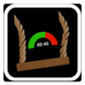

Social Mood Swing User Manual
Disclaimer: The user is responsible for monitoring their own data usage.
Analyzing topics with Social Mood Swing may utilize a fair amount of data.
It is recommended that wifi is used if the user is concerned about the usage
of cellular data.
Keyword Selection Tips:
The performance of this application is highly dependent on keyword selection by the user.
The following tips may be helpful in thoughtfully selecting keywords for various topics.
- Ensure all keywords are spelled correctly
- Do not choose keywords that are vauge and not specific to the topic, as this may cause the application to gather unrelated Tweets